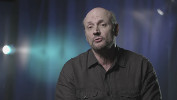

Grandes cenas - episódios
GRANDES CENAS
EPISÓDIOS - PRIMEIRA TEMPORADA
01. PIXOTE, A LEI DO MAIS FRACO
(estreia 16/11/2016)
O diretor Hector Babenco relembra a cena da amamentação em Pixote, a Lei do Mais Fraco (1980), um momento mágico que sintetiza o filme, sua delicadeza e brutalidade.
02. CIDADE DE DEUS
(estreia 23/11/2016)
O roteirista Bráulio Mantovani e o diretor de fotografia César Charlone mapeiam, da concepção ao resultado final, a cena da galinha em Cidade de Deus (2002), que já abre o filme impondo um estilo arrojado e dizendo muito sobre o seu universo e principal conflito.
03. COPACABANA ME ENGANA
(estreia 30/11/2016)
O diretor Antônio Carlos da Fontoura expõe o processo que resultou na cena do retorno de Alfeu em Copacabana Me Engana (1968), sua relação com os atores Paulo Gracindo e Odete Lara, suas ideias de encenação e seu apreço pelo subtexto na cena.
 |
04. CLUBE DA LUA
(estreia 07/12/2016)
O diretor argentino Juan José Campanella fala sobre a cena do banheiro em Clube da Lua (Luna de Avellaneda, 2004), na qual Ricardo Darín (Román) é confrontando pela família e por seu rival enquanto nu dentro do chuveiro, uma situação cômica e trágica ao mesmo tempo.
|  |
05. OS CAFAJESTES
(estreia 14/12/2016)
O diretor Ruy Guerra revela as razões que o levaram a filmar o longo travelling circular na cena da praia em Os Cafajestes (1962), um dos planos mais memoráveis do cinema brasileiro, que leva a personagem e o espectador ao limite do suportável.
06. ELES NÃO USAM BLACK-TIE
(estreia 21/12/2016)
A atriz Fernanda Montenegro e o montador Eduardo Escorel partilham memórias e percepções da cena do feijão em Eles Não Usam Black-tie (1981), de Leon Hirszman, um momento sensível em que o íntimo e o político se encontram.
07. IRACEMA, UMA TRANSA AMAZÔNICA
(estreia 28/12/2016)
Os diretores Jorge Bodanzky e Orlando Senna falam sobre a cena final de Iracema, Uma Transa Amazônica (1975), um filme que força os limites entre documentário e ficção, beleza e feiúra, alegria e melancolia.
08. O PÂNTANO
(estreia 04/01/2016)
O técnico de som Guido Berenblum detalha o processo de criação da cena da piscina em O Pântano (La Ciénaga, 2001) de Lucrecia Martel, uma diretora que encontra no som a grande força motriz para suas narrativas.
09. ROMANCE DA EMPREGADA
(estreia 11/01/2016)
O diretor Bruno Barreto e a atriz Betty Faria se divertem em lembrar das etapas de realização da cena final de Romance da Empregada (1988), que demandou três locações distintas para filmar os diferentes estágios da enchente.
10. BICHO DE SETE CABEÇAS
(estreia 18/01/2017)
A diretora Laís Bodanzky compartilha suas inquietações ao conceber a cena da fuga em Bicho de Sete Cabeças (2000), um dos pontos altos desse mergulho intenso no universo manicomial.
11. TERRA EM TRANSE
(estreia 25/01/2017)
O montador Eduardo Escorel e o diretor de fotografia Luiz Carlos Barreto comentam a caótica cena da coroação em Terra em Transe (1967) de Glauber Rocha, o ápice da verborragia, do barroco e da desconstrução da forma tão presentes nesse marco do Cinema Novo.
12. O GUARDIÃO
(estreia 01/02/2017)
O diretor argentino Rodrigo Moreno expõe seu processo muito particular de criação e encenação da cena do aniversário em O Guardião (El Custodio, 2006), valorizando a liberdade no set e priorizando o fluxo da interpretação dos atores.
EPISÓDIOS - SEGUNDA TEMPORADA
13. CENTRAL DO BRASIL
(estreia 12/07/2017)
A atriz Fernanda Montenegro esmiúça seu processo de composição da personagem Dora em Central do Brasil (1997), revivendo a experiência de filmar a intensa cena da romaria, em que Dora perde Josué em meio a centenas de fiéis.
 |
14. TODAS AS MULHERES DO MUNDO
(estreia 19/07/2017)
O diretor e roteirista Jorge Furtado analisa a cena do poema em Todas as Mulheres do Mundo (1966); na ficção, uma declaração de amor de Paulo a Maria Alice; na realidade, uma sessão de terapia para Domingos de Oliveira e Leila Diniz.
 |
15. COMO NASCEM OS ANJOS
(estreia 26/07/2017)
O diretor Murilo Salles percorre em detalhes a cena dos seios em Como Nascem os Anjos (1996), indo dos personagens à câmera, do conflito da cena aos grandes temas do filme: a desigualdade social e a invasão cultural que a TV a cabo iniciou no Brasil.
16. SÃO PAULO, SOCIEDADE ANÔNIMA
(estreia 23/08/2017)
O crítico Jean-Claude Bernardet destrincha a cena da ruptura entre Carlos e Luciana em São Paulo, Sociedade Anônima (1965), explorando-a plano a plano, destacando objetos, analisando gestos e evocando as motivações do seu amigo e diretor Luís Sérgio Person.
17. A OSTRA E O VENTO
(estreia 09/08/2017)
O diretor Walter Lima Júnior dá uma aula de cinema ao falar sobre a cena do lençol em A Ostra e o Vento (1997), um exemplo de como a câmera pode transmitir um sentimento e até mesmo encarnar um personagem.
18. WHISKY
(estreia 16/08/2017)
O diretor uruguaio Pablo Stoll nos transporta para o universo decadente e agridoce de Whisky (2004), descrevendo a cena do karaokê e seus personagens tão estáticos, tão melancólicos, mas repletos de sentimentos latentes.
19. ALMA CORSÁRIA
(estreia 02/08/2017)
O crítico Inácio Araújo e a montadora Cristina Amaral traçam pontos de contato entre a obra de Carlos Reichembach e a cena do piano na pastelaria em Alma Corsária (1993), uma homenagem ao paradoxo: estranha e sublime, popular e erudita.
20. MACUNAÍMA
(estreia 30/08/2017)
O montador Eduardo Escorel debate a cena da feijoada antropofágica em Macunaíma (1969), adaptação que Joaquim Pedro de Andrade faz do romance de Mário de Andrade, levando o fantástico e a farsa para o cinema de forma tão original e tão brasileira.
21. ABUTRES
(estreia 06/09/2017)
O diretor argentino Pablo Trapero discute as dificuldades de filmagem e as questões estéticas que envolveram a cena do atropelamento forjado em Abutres (2010), um elaborado e impressionante plano sequência que produz uma reviravolta na trama.
22. EU TE AMO
(estreia 13/09/2017)
O diretor de fotografia Murilo Salles e o crítico Marcus Mello problematizam a cena da despedida de Bárbara em Eu Te Amo (1981), de Arnaldo Jabor, uma antecipação quase profética do virtual tomando conta das relações afetivas.